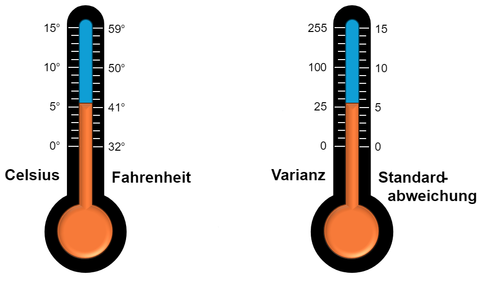

C.3.0 Mittelwerte¶
Modus, Median und Arithmetisches Mittel in Python
Implementierung Sie die Funktionen mode, median und mean, um den Modus,
den Median und das Arithmetische Mittel einer Liste zu bestimmen.
Lösung
Lösung von Marina:
1 2 3 4 5 6 7 8 9 10 11 12 13 14 15 16 17 18 19 20 21 22 23 24 25 26 27 28 29 30 31 32 33 34 35 36 37 38 39 40 41 42 43 44 45 46 47 48 49 50 51 52 53 54 55 56 57 58 59 60 61 62 63 64 65 66 67 | |
Varianz und Standardabweichung in Python
Implementierung Sie die Funktionen var, std um die Varianz und Standardabweichung einer Liste zu bestimmen.
Lösung
Lösung von Andreas:
1 2 3 4 5 6 7 8 9 10 11 12 13 14 15 16 17 18 19 20 21 22 23 24 25 26 27 28 29 30 31 32 33 34 35 36 37 38 | |
Arithmetisches Mittel
Sei \(X = (x_1, \cdots , x_n)\) ein Datensatz. Dann ist das arithmetische Mittel definiert als:
Varianz
Sei \(X = (x_1, \cdots , x_n)\) ein Datensatz. Dann ist das Varianz definiert als:
Die Standardabweichung \(\sigma\) ist definiert als die Wurzel der Varianz:

Die Varianz ist das arithmetische Mittel, des quadratischen Abstandes von den Datenpunkten zum arithmetischen Mittel (bzw. des quadrierten Fehlers).
Beispiel
Es sei \(X = (1,2,3,1.5)\). Dann ist \(\bar{X} = 1.875\)
Daraus ergibt sich \((X - \bar{X})^2 = (0.765625, 0.015625, 1.265625, 0.140625)\)
Berechnen wir davon noch mal das Arithmetische Mittel, erhalten wir die Varianz von \(X\):
Beispiel
Mittlere Note: \(\bar{x} = 3\).
Standardabweichung: \(\sigma = 0.5\).
Wenn die Noten normalverteilt sind, so gilt: \(\approx 68\%\) der Schüler liegen im Bereich \(2.5\) bis \(3.5\). \(\approx 95\%\) der Schüler liegen im Bereich \(2\) bis \(4\).